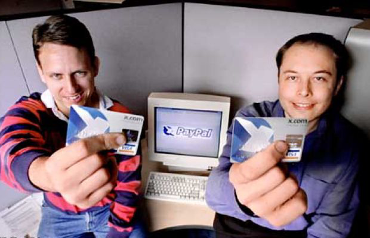
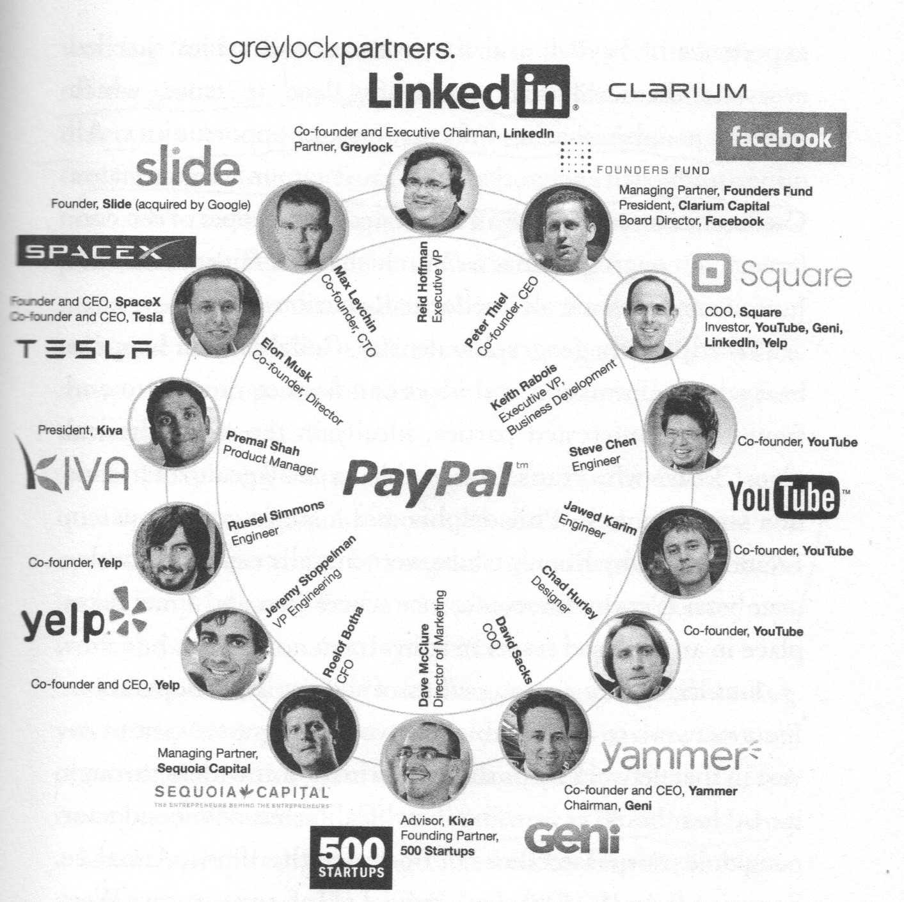

En 2000, deux start-up encore peu connues, Confinity et X.com, peinaient à trouver leur modèle. La première avait été créée en 1998 pour mettre au point un service de cryptographie. La seconde fondée l'année suivante, s'efforçait de développer de nouveaux services bancaires en ligne. Leur fusion donna naissance à une nouvelle société qui devait devenir l'un des fleurons de l'économie numérique est l'une de ses marques emblématiques : PayPal.
Offrant un service de paiement qui évitait de transmettre son numéro de carte bancaire, PayPal suscita le scepticisme et la raillerie du secteur bancaire. Les acteurs bien établi avaient beau jeu de se moquer des règles d'authentification et de sécurité qui semblait légères comparées aux standards de la place. Paypal se développa pourtant à une vitesse fulgurante. Par ses performances, elle prouva aux professionnels du secteur qui n'était pas nécessaire de surenchérir dans la sécurisation pour susciter la confiance des consommateurs.
Paypal fut rachetée deux ans plus tard pour un montant de 1,5 milliard de dollars par Ebay, dans la moitié des utilisateurs utilisaient cette solution de paiement. En 2011, PayPal gérait plusieurs dizaines de milliards de dollars de transaction par an. En 2012, la société envisage le déploiement de puces autocollantes pour passer les livraisons. Elle devient également un acteur du cloud computing, poursuivant son rêve de proposer une solution de paiement universel accessible depuis tous les terminaux électroniques concevables : un ordinateur, un téléphone mobile, mais aussi une télécommande ou une console de jeu vidéo.
Peter Thiel et Elon Musk au lancement de Paypal
En douze ans, après un développement fulgurant, PayPal est devenu un géant du logiciel et, au passage, à bouleversé la conception même des services bancaires, l'un des fondements de l'économie de marché. Fidèle à l'ambition de ses fondateurs, qui ont tous fait fortune, PayPal a changé le monde.
Le succès de PayPal n'a été anticipé ni contré par les banques traditionnelles. Apple a capté le marché de la musique en ligne en quelques années seulement, alors que Sony bénéficiait d'une position privilégiés, tant par la détention d'un catalogue d'oeuvres que par la maîtrise des technologie nécessaire à la conception des appareils d'écoute. Google a capté la part la plus porteuse du marché de la publicité en ligne en l'abordant par le segment en apparence le moins créatif et le moins rentable : celui des lien sponsorisés.
Les entreprises les plus prospères ont une idée du futur très différente du présent
Comme PayPal, ils sont des centaines à pouvoir se prévaloir d'avoir "changer le monde". Créatifs, disruptifs, ambitieux, ultramobiles, ils semblent parfaitement adapté à l'économie du monde numérisé.
Nous sommes en effet entrés dans un monde d'accélération des progrès technologiques, de plus en plus difficiles à planifier, qui ébranlent l'économie bien au-delà de la sphère du numérique ou des télécommunications. Un monde dans lequel des performances récemment inimaginable deviennent possibles. Un Monde, surtout, dans lequel la puissance technologique, l'intelligence et le désir d'agir sont omniprésents et dépassent tout ce que peuvent concentrer les organisations. C'est un monde jeune, dans lequel les aspirations, les méthodes et les modes d'actions des publics ont changé irrémédiablement.
"La quasi-totalité des entrepreneurs qui réussissent sont simultanément des initiés et des marginaux ou des exclus."
Peter Thiel
Mais ce ne sont ni les technologies, ni les évolutions sociétales qui bouleversent le monde. Comme lors de la révolution industrielle, comme à chaque période de grand bouleversement, ce sont d'abord des innovateurs radicaux, des entrepreneurs qui s'emparent de ses possibilités scientifique et technique, qui font la synthèse de toutes ses potentialités pour proposer quelque chose d'inédit. Et parce qu'ils viennent de l'extérieur, parce qu'ils ne se soucient pas des conventions habituelles, parce qu'il semble s'exprimer dans une langue neuve, il n'est pas exagéré de dire que le monde ancien les considère, peux ou prou, comme des barbares, jusqu'à ce qu'ils le dominent à leur tour.
Moralité : Les nouvelles technologies viennent de nouvelles aventures, les startups. Il est devenu trop dur de développer de nouvelles choses dans les grandes organisations. Celles-ci sont comme des États trop lourds, trop lents, gangrénées par la bureaucratie. Une entreprise de petite taille permet « d’avoir de l’espace pour penser », cette capacité à imaginer un nouveau futur sans s’encombrer du poids du passé et de la bureaucratie.
L'article vous a plu ? je vous conseille vivement de lire le livre "zéro to one" de Peter Thiel, cofondateur de PayPal et premier investisseur extérieur de Facebook, a donné un cours consacré à l’entrepreneuriat à Stanford. Les notes d’un étudiant de ce cours ont d’abord circulé librement sur Internet, avant d’être mises à jour et reprises par Peter Thiel dans le livre :